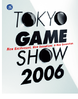

News Release
■ [8/4/2006] TOKYO GAME SHOW 2006 Event Outline
■ [7/19/2006] Announcement of the Theme for TOKYO GAME SHOW 2006
■ [2/20/2006] Outline of TOKYO GAME SHOW 2006

August 4, 2006
Computer Entertainment Supplier's Association
Nikkei Business Publications, Inc.
TOKYO GAME SHOW 2006 Event Outline
The Computer Entertainment Supplier's Association (CESA, Chairman: Yoichi Wada, Location: Nishi-shimbashi, Minato-ku, Tokyo) and Nikkei Business Publications, Inc. (Nikkei BP, President & CEO: Seiichi Oteru, Location: Sirokane, Minatoku, Tokyo) are pleased to announce the general overview of the "TOKYO GAME SHOW 2006," which will be held at Makuhari Messe (Mihama-ku, Chiba City, Japan) from September 22 (Fri.) through September 24 (Sun.), 2006.
The Show will be made possible through support from the Ministry of Economy, Trade and Industry (METI) and special sponsorship by NTT DoCoMo.
As of August 3, the TOKYO GAME SHOW will feature exhibits by 143 companies occupying 1,710 booth units, making this tenth anniversary event the largest TGS ever (last year's Show feature 131 exhibitors in 1,433 both units). We feel that the completion this year of the advent of next-generation platforms and the continued transition from ADSL to fiber optic network that has enabled the spread of massively multiplayer online games may underlie the unprecedented scale of this year's Show. In addition to special sponsor NTT DoCoMo, two major mobile carriers will be exhibiting in what promises to be the largest mobile content area in TGS history. International exhibitors will also be on site in greater numbers than ever before, including pavilion areas featuring North American and Asian software developers. Many highly-anticipated next generation titles will be debuted, along with hand-held console and online games, in a line-up that keeps expanding every year.
To accommodate the expansion of the event, an additional hall in the Makuhari Messe exhibition center will be added to this year's Show, making this the first show since 2001 to fill Halls 1 - 8 at that venue. Come experience for yourself the unprecedented thrills and new brands of excitement poised to take the global stage at this year's 10th-anniversary TOKYO GAME SHOW!
■ The theme of this year's TOKYO GAME SHOW is
New Excitement. New Sensations. A New Generation.
The three-day show will feature a host of revolutionary new titles and hardware, beyond anything even anticipated in the past. This year's theme reflects the vast potential and the impact embodied by the TOKYO GAME SHOW, as a stage for new ideas and technologies.
We see the TGS as a forum for debuting the latest in computer entertainment, but also as an opportunity to bring new thrills and recreation to the world.
We look forward to having you join us for our anniversary, and experience excitement like never before.
About the main visual
This year marks the 10th anniversary of the TOKYO GAME SHOW.
The TGS logo features prominently in this year's graphic layout, reflecting its strong presence over the past ten years within the industry and on the Japanese and world markets. The inclusion of game controller buttons that beg to be pushed in the "O" in the design completes the sense of anticipation for the future of entertainment.
"New Excitement. New Sensations. A New Generation."
As ever, New starts here.
About Admission
Please download and print out "Visitor Application Form" (PDF) from Admission page our official website. Fill in the form and please bring it with the admission fee to the "overseas reception desk" on the second floor of Hall 5, Makuhari Messe on the day of your first visit.
Media report during the show
Pre-registration is required in order to report the show. The registration will open early August.
*The opening of the registration will be announced by the official website and press release.
TGS Forum 2006, the conference for industry involved persons
"TGS Forum 2006," a conference for business professionals in the computer entertainment industry will be held as follows.
The keynote speakers will be Mr. Ken Kutaragi, President and Group CEO of Sony Computer Entertainment Inc. and Mr. Yoichi Wada, Chairman of CESA.
For those of you from overseas, we have "A Developers Session - CEDEC Premium," a seminar equipped with Japanese-English simultaneous interpretation.
CEDEC Premium is a session for developers that is held in conjunction with the CESA Developers Conference (CEDEC), Japan's largest seminar for game developers. Speaking on "The Truth About Epic Games "Unreal Engine 3": Opportunities for Japanese Corporations in Middleware for Next-Generation Hardware", key executives from Epic Games will address the potential in both business and technology.
In addition, five specialty sessions will get to the heart of the issues facing the next-generation game business: an on-line game session, a session on games for mobile phones, a character session, a developers session and a new session on finance and marketing.
*Only keynote speech and developers session will have simultaneous Japanese-English interpretation
【Keynote Speech】Outline
| Date and Hour | ： | September 22 (Fri.) 10:00 ~ 12:05 |
| Venue | ： | International Conference Hall at Makuhari Messe |
| Attendance Fee | ： | Free of charge |
| Application | ： | Please apply at the venue on the day of your attendance. |
［Agenda］
･10:00 ~ 11:10 "Next-Generation Entertainment Created by the PS3"
Speaker: Mr. Ken Kutaragi, President and Group CEO of Sony Computer Entertainment Inc.
Sony Computer Entertainment's next-generation PlayStation3 (PS3) will appear on the market this fall. Built around the concept of real-time computing, the PS3 makes possible an unprecedented level of realism and intensity. PS creator Ken Kutaragi shares his views on the entertainment of the future.
･11:15 ~ 12:05 "Possibilities and Challenges for the Game Industry"
Speaker: Mr. Yoichi Wada, Chairman of CESA.
The evolution of terminals and media has expanded the possibilities for games. At the same time, issues such as intellectual property rights have brought new, never-before-imagined challenges. A discussion of coming industry developments with reference to the challenges that must be overcome.
【Developers Session "CEDEC Premium"】Outline
"The Truth About Epic Games "Unreal Engine 3"
~Opportunities for Japanese Corporations in Middleware for Next-Generation Hardware"
| Date and Hour | ： | September 22 (Fri.) 15:15 ~ 17:15 |
| Venue | ： | International Conference Hall at Makuhari Messe |
| Attendance Fee | ： | Advance ticket 7,000 yen (tax included) *An admission fee is required separately to enter the show floor. Please refer to http://tgs.cesa.or.jp/english/attendee/admission.html for further information. |
| Application | ： | Please apply at the TGS Forum website |
［Agenda］
･15:15 ~ 15:25 [Introduction]
Mr. Kiyoshi Shin, Coordinator of IGDA Japan chapter
･15:25 ~ 16:05 [Lecture]
"Addressing Risk in Next-Generation Game Development"
Mr. Jay Wilbur
Vice President（Business Development）
Epic Games Inc.
･16:05 ~ 16:45 [Lecture]
"Technology Trends for Next-Generation Game Development"
Mr. Michael Capps
Chief Executive Officer
Epic Games Inc.
･16:45 ~ 17:15 [Q&A, Panel Discussion]
TOKYO GAME SHOW 2006 OUTLINE
| Name | ： | TOKYO GAME SHOW 2006 |
| Organizer | ： | Computer Entertainment Supplier's Association (CESA) |
| Co-organizer | ： | Nikkei Business Publications, Inc. (Nikkei BP) |
| Supported by | ： | Ministry of Economy, Trade and Industry |
| Special Sponsor | ： | NTT DoCoMo |
| Period | ： | Business Day* : Sept. 22 (Friday), 2006 *Admission is limited to industry participants. Open to the public: Sept. 23 (Saturday) .Sept. 24 (Sunday), 2006 From 10:00 a.m. to 5:00 p.m. |
| Venue | ： | Makuhari Messe 2-1 Nakase, Mihama-ku, Chiba City, Chiba Prefecture |
| Visitors | ： | 160,000 (target) |
| Exhibitors | ： | 143 (*as of August 3 ) *Please refer to the attached list. |
| Booths | ： | 1,710 (*as of August 3 ) |
| Admission fees | ： | Adult (Junior high school students & older)Day Ticket 1,200 yen (incl. tax) Children(elementary school age & under)Free of charge Special Discount TicketDay Ticket only 500 yen (incl. tax) *For those with identification booklets for physically disabled, the war wounded, A-bomb survivors or the mentally disabled. |
| Official Website | ： | http://tgs.cesa.or.jp/english/ |
| Inquiries | ： | [General]TOKYO GAME SHOW Information [Media] TOKYO GAME SHOW Management Office Press Room |